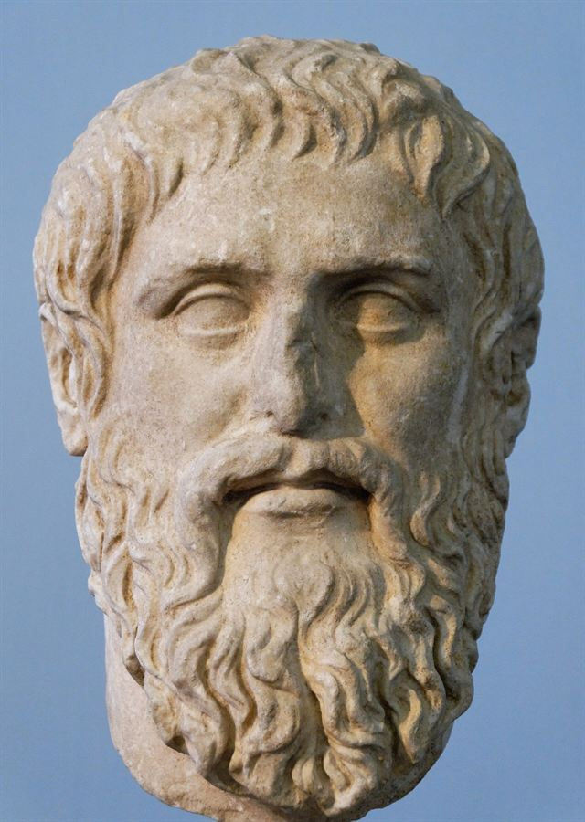

τί ἐστι;Portrait of Plato, Roman copy after Silanion
What Nails and Thesleff actually established about Platonic chronology, and what follows for developmentalism
The Bloomsbury Handbook of Plato (2022) announces, in its editorial Introduction, ‘the demise of the developmental consensus that existed fifty years ago’, and credits that demise to Holger Thesleff, Debra Nails and others. This paper asks two questions: what those two scholars actually established, and whether the announcement is warranted.
I argue that the demolition is real but narrower than the announcement suggests, and that the announcement is in an important respect not the Handbook's own view. The same volume contains William Prior's entry on developmentalism, which treats it as a live theory with several current varieties; Nails's own entry stops well short of the editors' verdict and ends by pointing the reader to a defence of the standard view; and the Stanford Encyclopedia's main Plato entry still describes the three-period division as widely used and disputed rather than abandoned. What Nails and Thesleff prove is that the early/middle boundary has no secure evidential basis, that no stylometric result is independent of the assumptions fed into it, that the corpus was revised and in places compiled, and that stylistic variation in Plato tracks function rather than date. What they do not prove — and Thesleff explicitly declines to claim — is that Plato's thought did not develop.
The distinction matters for anyone building an argument on the ‘early’ dialogues. I close by identifying which claims in a companion paper on the priority of definition survive these results untouched, and which are exposed.
The passage that prompts the question is in the editors' Introduction to the Bloomsbury Handbook of Plato:
In Plato scholarship of the last thirty to thirty-five years, however, four major developments have undermined and resolved these divisions. First, through the work of Holger Thesleff, Debra Nails and others, it has come to be widely recognized that despite the general developmental consensus, there was never, in fact, agreement about exactly which dialogues went into the three groups. More significantly, it was shown that neither thematic nor stylistic evidence unambiguously supports the division of Plato's dialogues into three groups. Evidence of revision and school accumulation has provided further evidence that assuming the dialogues to have been written in the way modern books are, at one time and by the author alone, is misleading. This has led to the demise of the developmental consensus that existed fifty years ago and a considerable weakening of the developmental-unitarian opposition.
Press and Duque 2022: 5
Three things should be said before the evidence is examined, because they bear on how much weight the passage can carry.
The first is that this is a statement by the volume's editors, in an introduction, about a field in which one of them has a long-standing position. Gerald Press has argued against doctrinal and developmental readings of Plato for three decades, and the Introduction's four ‘major developments’ are, in substance, a summary of the programme he has advocated.1 That is not a reason to discount the claim, but it is a reason not to treat it as a survey finding.
The second is that the volume does not speak with one voice, and the divergence is not subtle. Seventeen pages of the same book contain William Prior's entry on developmentalism, which sets out the position, surveys its varieties, and concludes:
Developmentalism has been the dominant interpretive paradigm for Platonic scholarship, particularly in the Anglo-American tradition, in the last century. It has, however, had its critics, beginning with unitarianism.
Prior 2022: 402
Prior then lists the criticisms — Kahn, Nails, Thesleff on the stylometric side, Press on the doctrinal side — and stops. He does not report a demise. On the contrary, the body of his entry describes live varieties of the position: Penner's version, which turns on the simple versus the tripartite soul and, Prior notes, ‘has the advantage that it does not require modification of the stylometric distinction between the early and middle dialogues’; and Robinson's, which turns on the succession elenchus → hypothesis → collection and division.2
The third is that Nails's own entry, which is the volume's technical treatment of the question, does not say what the Introduction says. Her opening sentence is careful and it is worth attending to its exact scope:
It was once hoped that determining the order in which Plato composed his dialogues would permit the mapping of his philosophical development, but that approach, dominant for some hundred and fifty years, now creaks unreliably.
Nails 2022: 402
What creaks is the inference from compositional order to philosophical development. The verb is not ‘has collapsed’, and the entry ends by directing the reader to Ryle's ‘comprehensive, common-sense discussion’ of composition order and to Irwin's ‘case for the Anglo-American “standard view” of the order of composition, distinguishing it from simple developmentalism’.3 An entry that closes by pointing at a defence is not an obituary.
So the question is worth asking directly, on the evidence rather than on the framing. What did the two scholars named in the Introduction actually establish?
Nails's entry is a demolition conducted criterion by criterion. She sets out four traditional foundations for establishing composition order, adds two further classes of evidence, and shows what each yields. The structure is worth reproducing because the cumulative shape is the argument.
Only two pieces of ancient evidence bear directly on order: Aristotle's remark at Politics 1264b26 that the Republic antedates the Laws, and Diogenes Laertius' report (3.37) that the Laws were ‘in the wax’ at Plato's death and were transcribed by Philip of Opus. From these, and from the linguistic mannerisms of the Laws — ‘notable synchysis, plummeting rate of hiatus, absence of certain clausulae’, catalogued by Thesleff — a late group can be identified: Timaeus, Critias, Politicus, Sophist, Philebus and Epistles 7 and 8.4
That is the whole of the secure basis, and it is worth being clear how little it is. It gives one relation (R. before Lg.) and one group at one end. Everything else in every proposed chronology is inference from that.
Nails's summary of what happened next: ‘Not unreasonably, scholars sought definitive style-markers of R. that would permit the identification of a set of R.-like dialogues, leaving a third and earlier set, yet more remote from Lg. Although that effort has failed to distinguish the “early” and “middle” groups reliably, the bulk of modern scholarship has nevertheless followed Campbell's nineteenth-century identification of three periods of productivity.’
That sentence is the entry's central negative claim, and it should be read precisely: the late group stands; the early/middle boundary does not.
(1) Literary. The proposal is that predominance of Socratic questioning marks a work early, and of constructive speeches, middle. Nails's objection is by counterexample: the criterion that dialogues with direct speech postdate the Theaetetus ‘founders on the exceptions: for example, Laches and Ion would be post-Tht.; Ti. and Parmenides would be pre-Tht., defying considerations of content.’ Several dialogues mix the modes.
(2) Stylometric. Here the finding is the sharpest in the entry, and it is a finding about method rather than about results:
The advent of computers allowed measurement and correlation of very large numbers of stylistic features and heralded a new interest in stylometry, but the problem of how to programme the computer reiterated Campbell's original problem: the only invulnerable datum was the relationship between R. and Lg., insufficient for generating secure results. Ledger (1989) marked an advance with new programmes that did not require prior assumptions about what to count as early style; but his preliminary results did not confirm scholars' preconceptions about the order of the dialogues. Brandwood (1990), less concerned about what he had to assume to produce his results, delivered more palatable fare, that is, confirming expectations.
Nails 2022: 403–4
The contrast between Ledger and Brandwood is the whole case in two sentences. The study that minimised prior assumptions failed to reproduce the consensus; the study that did not minimise them reproduced it. That is the signature of a method returning its own inputs. Nails adds the detail that most damages the three-period picture from inside stylometry itself: ‘both R. bk 1 and the first part of Prm. usually cluster with the Socratic dialogues considered early’ — so the clustering cuts across dialogues rather than between them.
(3) Thematic. Two objections, and Nails calls them insurmountable:
(a) ‘the view considered most highly evolved depended entirely on the existing views of the scholars who performed the investigations’;
(b) ‘when dialogues addressing more than one subject were compared, a dialogue might be “highly developed” on one subject and introductory on another, while another dialogue would have the reverse configuration, leaving no obvious way to determine which had been written earlier.’
(a) is the charge of circularity at the level of the criterion; (b) is a structural point that does not depend on any scholar's bias and is, to my mind, the more serious of the two. If development is multi-dimensional, a single ordering cannot be read off it even in principle.
(4) Historical. Absolute dates inferred from allusions to events, rivals or persons. Nails's treatment is brief and the brevity is a verdict: the results are as various as the events selected, and the Theaetetus example — 392 on one reconstruction, 369 on another — shows the range.
The entry's decisive paragraph is the one that turns the four criteria on each other:
Consensus about the order of composition has stayed firmly out of reach for several reasons. Despite the wondrously exact results achieved by many of these scholars, their results contradict one another within and across the methods used. Moreover, a circularity problem confounds (1)-(4): each suggested order depends on first positing a pre-R. exemplar for which no independent confirmation has ever been credible, though the Apology has been an unfortunate favourite – unfortunate because court speeches are not reliably compared to dialogues.
Nails 2022: 404, citing Nails 1995: 53–63
This is the strongest thing in the entry and it deserves to be stated in its general form. Every method for ordering the dialogues needs a fixed point at the early end to measure distance from. The late end has one, given by Aristotle and Diogenes. The early end has none. So a starting exemplar must be posited; the ordering is then generated relative to it; and the ordering cannot then be used to confirm the choice of exemplar without circularity. The Apology is the usual choice, and it is a bad one, because it is not a dialogue.
Criteria (5) and (6) are different in kind. They do not compete with the first four; they undermine the question those four were trying to answer.
(5) Revision. ‘Textual evidence and testimony that Plato edited or rewrote dialogues in his lifetime confound any attempt to set a single date of composition for any dialogue.’ Nails lists the dialogues with clear evidence of revision — Gorgias, Protagoras, Cratylus, Alcibiades I, Theaetetus — and the Laws, where Tarrant has distinguished three styles within the single work.5
The logical force of this is easy to understate. If a work has no single date, then the object the whole enterprise sought — a linear ordering of dated works — does not exist to be found. This is not a difficulty about evidence. It is a difficulty about the target.
(6) Overlap. ‘Short dialogues may have been written during the periods when longer ones – Grg., R., Lg. – were being conceived and executed, resisting any linear chronology.’ Nails develops the Republic case at length: a freestanding Republic I, and a proto-Republic of two scrolls comprising much of II, most of III, and the start of V — supported by the Aristophanic parallels in the Ecclesiazusae of 392/1, by Aulus Gellius on a two-scroll version, and by the fact that the summaries at Timaeus 17c–19b, at Republic VIII and in Politics II all summarise those same parts and no others.
That last argument is the best in the entry, because it is not an argument from style or from doctrine but from what three independent ancient summaries happen to contain.
She does not say that Plato's thought did not develop. She does not say the three-period division is false. She says the project of recovering development from composition order creaks — and she ends the entry by naming two treatments a reader should consult, one of which is a defence of the standard view. The gap between that and ‘the demise of the developmental consensus’ is the gap between a method in serious trouble and a thesis refuted.
Thesleff's case is older, longer and differently shaped. It runs across three books now collected as Platonic Patterns — Studies in the Styles of Plato (1967), Studies in Platonic Chronology (1982) and Studies in Plato's Two-Level Model (1999) — and it has four planks. Three are negative and one is positive, and the positive one is what makes the negative ones bite.
Pages 153–65 of the Chronology print a list of proposed chronologies from Tennemann (1792) onward, each with the criteria its author used. It is a remarkable document to read consecutively, and Thesleff's framing of why he prints it is characteristically dry:
…in general the lack of cumulative linearity in the progress of research of this kind, perhaps will also justify the printing of the list here: a later study is not necessarily closer to the truth than an earlier one.
Thesleff 2009: 153
A reviewer counts one hundred and thirty-two distinct chronologies in the list, and draws the inference Thesleff intends: where that many scholars derive that many different results from the same evidence, the trouble is not in any one of them.6 Nails makes the same point by a different route at Nails 1995: 53–63, and the two are best read as one finding: the dispersion of results is itself the evidence. A method that reliably tracked a real signal would converge. Sixty years of divergence is a diagnosis.
This is the plank the Handbook's Introduction does not mention, and it is the one that does the most work. Studies in the Styles of Plato (1967) is not primarily a book about chronology at all. It is an attempt to describe what Plato's styles do. Thesleff distinguishes ten classes — colloquial, semi-literary conversational, rhetorical, pathetic, intellectual, mythic narrative, historical, ceremonious, legal, and the onkos style — and then asks what governs their distribution.
The answer is that they are governed by dramatic and rhetorical function. Rhetorical style ‘is commonly employed for play and parody in the early and middle works’ but ‘more often … serves Platonic persuasion above the mimetic level’, occurring ‘mainly in monologues or speeches’. Pathetic style is ‘largely mimetic’ and ‘particularly common in interludes’. Ceremonious style is ‘mostly used … to add loftiness to myths and visions’. Intellectual style ‘serves a serious purpose in Platonic argument, and also in visions’, and is ‘particularly manifest in those works which develop the methods of Platonic philosophy’.7
Consider what this does to stylometry. If the incidence of a stylistic feature is set by whether a passage is a myth, an interlude, a parody, a piece of formal rhetoric or a stretch of dialectic, then measuring its frequency across whole dialogues measures the mix of passage types in each dialogue. Two works will resemble each other stylometrically when they contain similar proportions of similar kinds of writing. That is a fact about their contents and their form, and there is no reason it should be a fact about their dates.
This explains what would otherwise be a coincidence: Nails's observation that Republic I and the first part of Parmenides cluster with the ‘early’ dialogues. On the chronological reading these are anomalies requiring separate hypotheses. On Thesleff's, they are exactly what one should expect, because both are stretches of elenctic conversation and the ‘early’ dialogues are largely made of that. The feature that stylometry measures is present.
Thesleff's own conclusion is blunt:
Traditional chronological stylometry cannot be expected to yield useful results.
Thesleff 2009: 229
And he is careful to distinguish this from a rejection of statistical method as such. The same page recommends ‘a very broad “cluster stylometry”’ applied to large bodies of material by computer, and a postscript reports his own cluster tests, run with K. Loimaranta on Thesaurus Linguae Graecae tapes. Their most telling result:
‘(d) The differences in the use of particles are on the whole greater between the three types of exposition studied … than between the various works in the Corpus.’
‘(e) The differences … are greater between “obviously” authentic works such as Chrm., Grg., Phd. and Smp., than between the authentic works en bloc and various dubia or spuria.’
‘(f) No statistically reliable dialogue clusters were found apart from [Xenophon, the late group, and a group around Phdr., Prm. I, R. II–X and Tht.].’
Thesleff 2009: 230 n. 202Result (d) is the empirical form of the functional thesis: passage type is a bigger source of variance than authorship-date. Result (e) is a warning that the technique cannot even separate the certainly genuine from the doubtful. This is a stylometrist's refutation of stylometry, conducted with the tools.
Thesleff's third plank is the one Nails takes over as her criterion (5), and he states its target precisely:
The modern view of Platonic chronology rests to some extent upon premises concerning methods of publication which are probably anachronistic. It is taken for granted or implied that the finishing of a manuscript for a dialogue was in most cases the result of a single effort within a relatively short space of time.
Thesleff 2009: 230
To that he adds ‘semi-authenticity’: composition in cooperation with younger members of the Academy, with the Academy functioning ‘analogous to that of a modern copyright-supervising body of publishers’. The consequence is that ‘Platonic dialogue’ may name a text with a compositional history rather than a date — and a great deal of the corpus, on his account, does.
The fourth plank is the one Thesleff himself thinks strongest, and it is the alternative explanation of the phenomena that developmentalism explains by date. He puts it in his 2009 Introduction as a list of ‘complications that, taken together, exclude the possibility that the dialogues reflect a steady line of linguistic change’:
Such complications include the revision of the texts; Plato's cooperation with younger friends (‘semiauthenticity’); the oral discussion behind the texts, which may have affected even the choice of style; and, above all, the different audiences to whom the written dialogues were originally addressed.
Thesleff 2009: xiv–xv
And the application to the ‘early’ dialogues specifically:
It seems to me easier to argue (as I did) that most of the so-called ‘early’ dialogues were written for different audiences and different purposes after the Academy had been ‘founded.’
Thesleff 2009: 390 n.
This is a rival hypothesis of the right shape. Developmentalism explains stylistic and doctrinal variation by when; Thesleff explains it by for whom and for what. Both explain the data. Neither is entailed by it. That is precisely the position in which a criterion is needed to choose between them — and the burden of §2 is that no such criterion has been found.
His summary of where the negative case leaves us opens Part II of the Chronology:
The results arrived at so far in the present study are for the most part negative. The sad and perhaps irritating truth is that the strict, reliable and elegantly linear Platonic chronology dreamed of by earlier generations of scholars, seems to be today even more remote than ever.
Should we give up?
Thesleff 2009: 245
He does not give up: Part II builds a new model and ends with ‘a tentative sketch of a new chronology, open to further debate’. This matters for the present question. Thesleff is not an anti-chronologist. He is a chronologist who thinks the existing methods are worthless and proposes better ones, and his own reconstruction is a developmental story of a kind — one in which a proto-Republic precedes the dialogues we have, and the dramatic dialogue form is an Academy development.
And on the specific question of whether Plato's thought developed, he is explicit that the question remains open:
Much more careful study and pondering is needed to make sure what in the dialogues reflects a real development in thought (and style), and what are suggestions and experiments for different readers.
Thesleff 2009: 390 n.
That sentence should be set beside the Handbook's ‘demise’. Thesleff's position is that we cannot currently tell development from audience-variation — not that there was none.
It is worth separating the two lists carefully, because most of the confusion in this area comes from running them together.
| Established | By what |
|---|---|
| A late group exists and is stylistically distinct: Ti., Criti., Sph., Plt., Phlb., Lg., with Epistles 7–8. | Aristotle Pol. 1264b26; D.L. 3.37; the Laws mannerisms catalogued by Thesleff. Not in dispute. |
| The early/middle boundary has no secure evidential basis. | Nails: ‘that effort has failed to distinguish the “early” and “middle” groups reliably’. |
| No stylometric result is independent of its assumptions. | Nails on Ledger vs Brandwood; Thesleff's functional account of style; the Loimaranta cluster tests. |
| Every proposed order is circular at the early end: it presupposes an exemplar it cannot independently confirm. | Nails 2022: 404; Nails 1995: 53–63. |
| Thematic development cannot in principle yield a single order, because it is multi-dimensional. | Nails's objection (b): a dialogue may be advanced on one topic and introductory on another. |
| Several dialogues were revised, and some compiled; a work may have no single date. | The revision dossier: Grg., Prt., Cra., Alc. 1, Tht., Lg.; the proto-Republic. |
| Stylistic variation in Plato is largely governed by passage function. | Thesleff 1967, and the cluster result that variance between exposition types exceeds variance between works. |
| There is a rival explanation of the same data: audience and purpose rather than date. | Thesleff 2009: xiv–xv, 390 n. |
| Not established | Why not |
|---|---|
| That Plato's thought did not develop. | Nobody argues this. Thesleff explicitly leaves it open; Nails does not address it. |
| That the three-period division is false. | The arguments show it is unsupported, which is a different result. An unsupported division may still be true. |
| That the late group is doubtful. | It is the one secure result, and both authors rely on it. |
| That unitarianism wins by default. | Unitarianism is a positive thesis about doctrinal unity and needs its own argument. The collapse of a method for dating does not supply one. |
| That there is a scholarly consensus that developmentalism is finished. | Prior's entry in the same volume; the SEP's treatment; Irwin's defence of the standard view, to which Nails herself directs the reader. |
The honest answer requires distinguishing three claims that usually travel together under one name.
(D1) Chronological developmentalism. The dialogues fall into three compositionally distinct groups, and the groups can be identified by stylistic and thematic evidence.
(D2) Philosophical developmentalism. Plato's thought changed over his life, and the changes can be read off the dialogues in order.
(D3) The Socratic thesis. A subset of the dialogues represents the philosophy of the historical Socrates rather than Plato's own.
(D1) is in serious trouble at the early/middle boundary and secure at the late one. That is not a nuance; it is the actual state of the evidence, and it is what both Nails and Thesleff say. A scholar who writes ‘the late dialogues’ is on firm ground. A scholar who writes ‘the early dialogues’ is using a category whose boundary has never been established by any method that does not assume it.
(D2) has lost its instrument but not its subject. The arguments of §§2–3 attack the inference from composition order to development; they do not touch the antecedent probability that a man who wrote for fifty years changed his mind. What has gone is the claim to be able to trace the change by ordering the texts. This is why the Stanford Encyclopedia can still say that ‘it remains a matter of dispute whether the division of Plato's works into three periods … does correctly indicate the order of composition, and whether it is a useful tool’ — a formulation that treats the question as open, not closed.8
(D3) is the casualty. It is the claim that has actually been abandoned, and the Handbook's Introduction is right about it: those who now pursue ‘Socratic philosophy’ ‘do so without making historical claims’. The reason is straightforward. (D3) requires (D1) at exactly the boundary where (D1) fails — the early/middle line — and it requires it to carry a further weight, namely that the works on one side of the line report someone else's views. With the line unsecured, the historical thesis has nothing to stand on.
So: is developmentalism over? No, but the strong version is, and the version most often relied on in Anglophone Socratic scholarship is the strong version.
What is over is the Vlastosian package: three groups fixed by stylometry, mapped onto three philosophical stages, with the first stage attributed to the historical Socrates. Each of the three joints in that package has been shown to be unsupported, and one of them — the historical attribution — has been generally given up.
What is not over is the modest claim that Plato wrote the Laws late and probably changed his mind about some things, nor the practice of grouping dialogues for interpretative convenience. Prior's entry describes versions of developmentalism that survive the stylometric collapse intact, because they do not depend on it: Penner's soul-based division, and Robinson's account of the succession of methods.
One further observation about the sociology, because it explains why the answer feels less clear-cut than it is. The three-period division is enormously convenient. It supplies a way of citing, a way of organising a syllabus, and a way of quarantining inconvenient passages. Ausland's entry in the same Handbook puts the resulting situation exactly:
But the conjectural three-period ordering and explanation proposed by Campbell in 1867 still remain those habitually assumed by Platonic scholars today, if usually without a sufficiently critical appreciation of their historical genesis or scientific fragility.
Ausland 2022: 400
‘Habitually assumed’ is the operative phrase. A framework can be simultaneously without evidential support and in universal use, and that is the actual condition of Platonic chronology. Announcing its demise is premature; relying on it without argument is no longer respectable.
These results bear directly on the companion paper, The Same Question from the Beginning, which argues throughout from a body of texts it calls the ‘early’ or ‘Socratic’ dialogues. It is worth separating what is exposed from what is not, since the exposure is narrower than a first glance suggests.
Almost all of it, because almost none of its arguments are chronological. The regress of question-presuppositions is derived from the form of the τί ἐστι; question, not from when it was asked. The paradox of analysis applies to any demand for a definition whenever it was made. Socrates' condition at Meno 79d is a condition stated in a text; it does not matter for the argument whether that text is early, middle or a revision of both. The gold and set-theory cases of §§14–15 are entirely independent of Platonic chronology.
More pointedly: the paper's central complaint is that the priority principle asserts a requirement with no route to satisfaction. That complaint is indifferent to the date of the works asserting it, and would survive the discovery that Plato wrote the whole corpus in a fortnight.
Three things, in ascending order of seriousness.
(i) The word ‘early’. The paper uses it as a neutral label some five times. Given §5, it should be replaced by something that names the texts rather than dating them — ‘the dialogues of definition’, or ‘the aporetic dialogues’, or simply a list. This costs nothing and removes an unearned assumption.
(ii) Benson's framing, inherited. Socratic Wisdom is subtitled The Model of Knowledge in Plato's Early Dialogues, and its argument is explicitly about a chronologically defined subset. The paper takes over Benson's (P), (D) and matrix conditions without querying the subset. That is legitimate — one may argue against a position on its own terms — but the paper should say so, because a reader who has read Nails will otherwise think the omission careless rather than deliberate.
(iii) §18.5, ‘A developmental consequence’. This is the real exposure. That subsection proposes reading the Theory of Forms as a response to the regress, and it does so in explicitly chronological terms: ‘the middle-period ontology supplies precisely what a thin defence lacks’; ‘the movement from aporetic enquiry to the separated Form’; and ‘it explains why the Parmenides is where it is’. Every one of those phrases presupposes an ordering that §§2–3 show cannot be established. And the last one presupposes it at the exact point of maximum weakness, since the first part of the Parmenides is one of the two stretches Nails names as clustering stylometrically with the ‘early’ dialogues.
The subsection is already hedged — it is offered ‘as a suggestion rather than a result, since establishing it would require a paper of its own’ — and that hedge should now be strengthened into an explicit statement of what the suggestion would require. Something like:
The reading is developmental, and developmental readings are in worse condition than they were. It requires that the dialogues in which unity is defended precede those in which separated Forms are posited, and no method for establishing such an order has survived criticism (§§2–3 above). What can be said without an ordering is weaker and still worth saying: that the Forms, however they stand chronologically to the aporetic dialogues, answer a demand those dialogues generate and do not meet. That is a claim about the logical relation of two positions, not about the sequence of two periods.
That reformulation loses the narrative and keeps the argument, which is the right trade. It also brings §18.5 into line with what the rest of the paper already does: the paper's other structural claims — the four termini, the quadrilemma, the reversal of Benson's dependence — are all claims about logical relations among positions, and none of them needs a date.
There is one place where these results help rather than hurt. The paper's §17 argues that the nominal/real definition question is prior to the priority question, against Benson's ordering of them. Benson defers the nominal/real question partly on the ground that its resolution ‘will depend at least in part’ on the epistemological issue — and the epistemological issue, as he frames it, is an issue about a chronologically defined corpus. If that corpus has no secure boundary, then Benson's deferral is resting on two things that will not bear weight rather than one. The reversal argued in §17 becomes correspondingly easier to make.
The Handbook's editors say the developmental consensus has died. What Nails and Thesleff actually show is narrower and, I think, more useful: that the late group is secure; that the early/middle boundary has never been established by any method that does not assume it; that stylometry returns its inputs; that thematic development cannot yield a single ordering even in principle; that several dialogues have compositional histories rather than dates; and that there is a rival explanation of the same variation — audience and purpose — which fits the evidence at least as well.
None of that shows that Plato's thought stood still, and neither author claims it does. Thesleff, who has the best claim to have done the demolition, ends by saying that we do not yet know how to tell development from experiment for different readers, and then proposes a chronology of his own. That is the position of a man who thinks the question is hard, not one who thinks it is closed.
What has genuinely ended is the historical thesis — the use of a chronologically defined ‘early’ group as a source for the philosophy of Socrates rather than Plato. It ended because it needed the one boundary that the evidence will not supply. Everything else in the developmental family is weakened, unsupported, and in continuing use; and the right response to a framework in that condition is neither to announce its death nor to go on assuming it, but to write arguments that do not need it.
Ausland, H. W., ‘Chronology and Development’ [reception section], in Press and Duque (eds.) 2022, 397–400.
Brandwood, L., The Chronology of Plato's Dialogues (Cambridge, 1990).
Campbell, L., The Sophistes and Politicus of Plato (Oxford, 1867).
Cherniss, H., ‘The Relation of the Timaeus to Plato's Later Dialogues’, American Journal of Philology, 78 (1957), 225–66.
Irwin, T. H., ‘The Platonic Corpus’, in G. Fine (ed.), The Oxford Handbook of Plato (Oxford, 2008), 63–87.
Kahn, C. H., Plato and the Socratic Dialogue (Cambridge, 1996).
Kahn, C. H., ‘On Platonic Chronology’, in J. Annas and C. Rowe (eds.), New Perspectives on Plato, Modern and Ancient (Cambridge, Mass., 2002), 93–127.
Ledger, G. R., Re-counting Plato: A Computer Analysis of Plato's Style (Oxford, 1989).
Lutoslawski, W., The Origin and Growth of Plato's Logic (London, 1897).
Nails, D., Agora, Academy, and the Conduct of Philosophy (Dordrecht, 1995).
Nails, D., ‘Compositional Chronology’, in Press and Duque (eds.) 2022, 402–6.
Nails, D., and Thesleff, H., ‘Early Academic Editing: Plato's Laws’, in S. Scolnicov and L. Brisson (eds.), Plato's Laws: From Theory into Practice (Sankt Augustin, 2003), 14–29.
Penner, T., ‘Socrates and the Early Dialogues’, in R. Kraut (ed.), The Cambridge Companion to Plato (Cambridge, 1992), 121–69.
Press, G. A. (ed.), Who Speaks for Plato? Studies in Platonic Anonymity (Lanham, MD, 2000).
Press, G. A., and Duque, M. (eds.), The Bloomsbury Handbook of Plato (London, 2022).
Prior, W. J., ‘Developmentalism’, in Press and Duque (eds.) 2022, 400–2.
Robinson, R., Plato's Earlier Dialectic, 2nd edn. (Oxford, 1953).
Ryle, G., Plato's Progress (Cambridge, 1966).
Tarrant, H., ‘The Composition of Plato's Gorgias’, Prudentia, 14 (1982), 3–22.
Thesleff, H., Platonic Patterns: A Collection of Studies by Holger Thesleff (Las Vegas, 2009; repr. 2014). Collecting Studies in the Styles of Plato (1967), Studies in Platonic Chronology (1982), Studies in Plato's Two-Level Model (1999), and four articles.
Vlastos, G., Socrates: Ironist and Moral Philosopher (Cambridge, 1991).
Zeyl, D., and Sattler, B., ‘Plato’, The Stanford Encyclopedia of Philosophy.